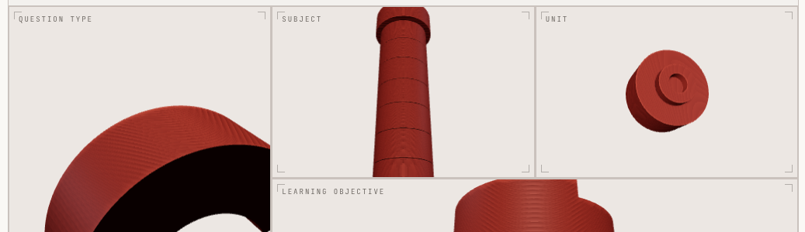

Koustubh Bhattacharjee · Physics & Maths
One‑to‑one · Online
Specialist tuition in four subjects — taught by a physicist, on a system built precisely for it.
01A‑Level PhysicsAll boards
02A‑Level MathsPure · Mechanics · Statistics
03GCSE PhysicsFoundation & Higher
04GCSE MathsFoundation & Higher

The System · Scholar
A bespoke tutoring platform I built: it models your whole syllabus and adapts every lesson to what you've yet to master.
MS Physics, UT Dallas · Former HS Physics Teacher, KIPP DC · Astrophysics research · 8+ years teaching · Also AP / SAT / Pre‑Calc